14 LAScatalog processing engine (1/2)
14.1 Rationale for LAScatalog functionality
So far we have demonstrated how to process a point cloud file using readLAS(). In practice, ALS acquisitions are made up of hundreds or even thousands of files, not being feasible (or possible!) for all to be loaded at once into memory. For example, the image below shows an acquisition split into 320 1 km² tiles:

The extraction of regions of interest (ROIs) such as plot inventories becomes difficult in these situations because one must search in which file and sometimes which files the ROI belongs. It also makes the creation of continuous outputs such as a DTM, a raster of metrics, individual tree detection, or anything else far more complicated. One may be tempted to loop though individual files (and we have seen many users doing so) like so:
files <- list.files("folder/")
for (file in files) {
las <- readLAS(file)
output <- do.something(las)
write(output, "path/to/output.ext")
}This however is very bad practice because each file is loaded without a buffer, meaning outputs will be invalid or weak at the edges because of the absence of spatial context.
Let’s compute a DTM (see section 4) as an example, where we use a for loop on 4 contiguous files. We can see the obvious invalidity of the DTM between the files, but also at the periphery, even if less obvious.
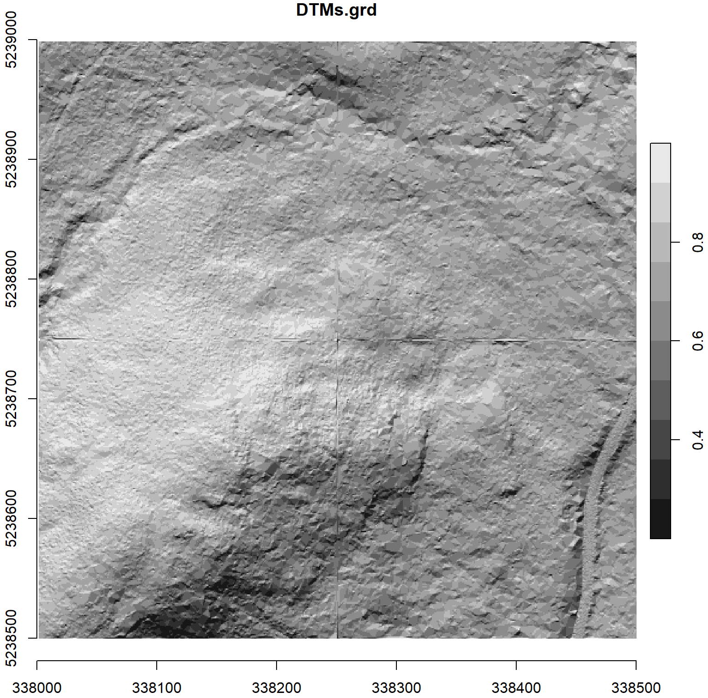
For comparison, see the accurate DTM below, that was generated with the LAScatalog processing engine. The benefit here is the ability to manage (among a variety of other capabilities) on-the-fly buffering.
14.2 The LAScatalog engine
The lidR package provides a powerful and versatile set of tools to work with collections of files and enables the application of workflow with an automatic management of tile buffering, on disk storage, parallelization of tasks and so on. While the engine is powerful and versatile, it’s also a complex tool, so we have dedicated two section to its description.
This section presents the justification for the engine and demonstrates how to use it by applying common lidR functions seen in previous section. The next section goes deeper into the engine to demonstrate how developers can leverage the internal functionality of lidR to create their own applications.
The LAScatalog class and the LAScatalog engine are intricately documented in two dedicated vignettes available here and here. The purpose of this book is to propose alternative documentation with more illustrated examples and real use cases.
14.3 Read a collection of files
The function readLAScatalog() reads the header of all the LAS files of a given folder. The header of a LAS file contains, among others, the bounding box of the point cloud, meaning that it’s possible to know where the file is situated spatially without reading a potentially massive amount of data. readLAScatalog() builds a sf/sfc_POLYGON out of the bounding boxes of the files and presents them in an easily accessible manner.
ctg
#> class : LAScatalog (v1.1 format 1)
#> extent : 678815.8, 709272.6, 5004393, 5028388 (xmin, xmax, ymin, ymax)
#> coord. ref. : WGS 84 / UTM zone 17N
#> area : 295.35 km²
#> points : 910.11 million points
#> density : 3.1 points/m²
#> density : 2.1 pulses/m²
#> num. files : 361
plot(ctg)In this and the following section (section 15) we will use a collection of nine 500 x 500 m files to create examples. The nine files can be downloaded here:
- tiles_338000_5238000.laz
- tiles_338000_5238500.laz
- tiles_338000_5239000.laz
- tiles_338500_5238000.laz
- tiles_338500_5238500.laz
- tiles_338500_5239000.laz
- tiles_339000_5238000.laz
- tiles_339000_5238500.laz
- tiles_339000_5239000.laz
ctg <- readLAScatalog("data/ENGINE/catalog/")
ctg
#> class : LAScatalog (v1.0 format 1)
#> extent : 338000, 339500, 5238000, 5239500 (xmin, xmax, ymin, ymax)
#> coord. ref. : WGS 84 / UTM zone 19N
#> area : 2.25 km²
#> points : 9.45 million points
#> density : 4.2 points/m²
#> density : 3.4 pulses/m²
#> num. files : 9
plot(ctg)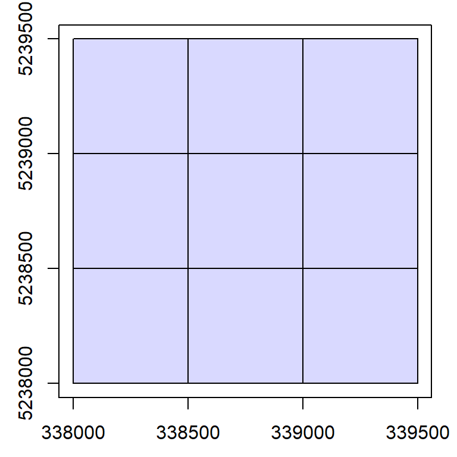
14.4 Validation
Similar to section 2, an important first step in ALS data processing is ensuring that your data is complete and valid. The las_check() function performs an inspection of LAScatalog objects for file consistency.
#>
#> Checking headers consistency
#> - Checking file version consistency... ✓
#> - Checking scale consistency... ✓
#> - Checking offset consistency... ✓
#> - Checking point type consistency... ✓
#> - Checking VLR consistency... ✓
#> - Checking CRS consistency... ✓
#> Checking the headers
#> - Checking scale factor validity... ✓
#> - Checking Point Data Format ID validity... ✓
#> Checking preprocessing already done
#> - Checking negative outliers... ✓
#> - Checking normalization... no
#> Checking the geometry
#> - Checking overlapping tiles... ✓
#> - Checking point indexation... yes
For a deep (and longer) inspection of each file use deep = TRUE. This will sequentially load each file entirely. It’s thus important to be sure you have enough memory to manage this.
14.5 Extract Regions of interest
14.5.1 Extract a single ROI
Functions using the clip_*() moniker are a good starting point for exploring the capabilities of the LAScataglog engine. clip_*() functions allow for the extraction of a region of interest (ROI) from a point cloud. The following example extracts a circle from a point cloud loaded into memory in a LAS object:
This can be extended to a LAScatalog seamlessly. The engine searches in which file(s) the ROI belongs and extracts corresponding regions from all applicable files. The output is a LAS object.
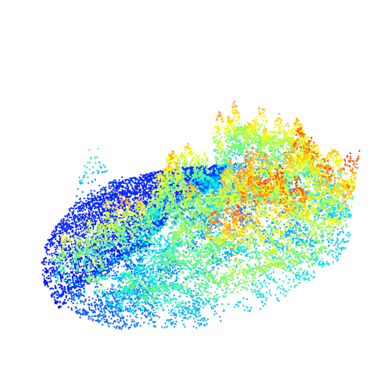
14.5.2 Multiple extractions
Multiple extractions is also possible and is performed the same way by searching the corresponding files and then querying in each file no matter if the region of interest is situated in one or several files. The output becomes list of LAS objects.
x <- c(339348.8, 339141.9, 338579.6, 338520.8, 338110.0, 339385)
y <- c(5239254, 5238717, 5238169, 5239318, 5239247, 5239290)
r <- 40
plot(ctg)
points(x, y)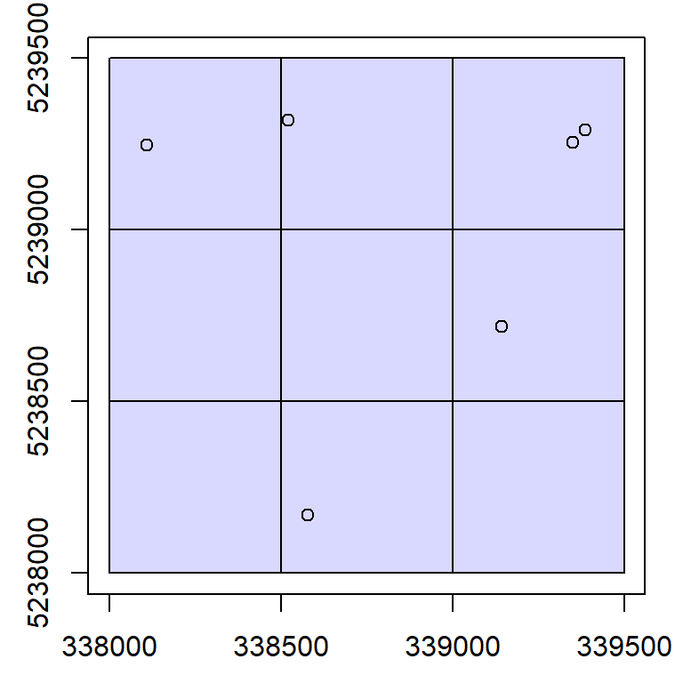
rois <- clip_circle(ctg, x, y, r)
rois[1:2]
#> [[1]]
#> class : LAS (v1.0 format 1)
#> memory : 1.5 Mb
#> extent : 339308.9, 339388.7, 5239214, 5239294 (xmin, xmax, ymin, ymax)
#> coord. ref. : WGS 84 / UTM zone 19N
#> area : 5051 m²
#> points : 25.4 thousand points
#> density : 5.04 points/m²
#> density : 3.9 pulses/m²
#>
#> [[2]]
#> class : LAS (v1.0 format 1)
#> memory : 1.3 Mb
#> extent : 339102, 339181.9, 5238677, 5238757 (xmin, xmax, ymin, ymax)
#> coord. ref. : WGS 84 / UTM zone 19N
#> area : 5013 m²
#> points : 21.1 thousand points
#> density : 4.2 points/m²
#> density : 3.65 pulses/m²14.6 Modification of default behavior
When processing a LAScatalog, no matter with which function, it internally uses what we called the LAScatalog processing engine. This is what happened under the hood when using clip_circle() in above examples. The default behavior of the engine is set in such a way that it returns what is most likely to be expected by the users. However the behavior of the engine can be tuned to optimize processing. Engine options, at the user level, can be modified with opt_*() functions.
The goal of this section is to present these options and how they affect the behavior of the engine.
14.6.1 Multiple extractions on disk
The engine has the ability to write generated results to disk storage rather than keeping everything in memory. This option can be activated with opt_output_files() <- that is used to designate the path where files will be written to disk. It expects a templated filename so each written file will be attributed a unique name.
In the following example, several LAS files will be written to disk with names like 339348.8_5239254_1.las (center coordinates from each file) and the function returns a LAScatalog object that references all the new files instead of a list of LAS object.
opt_output_files(ctg) <- paste0(tempdir(), "/{XCENTER}_{YCENTER}_{ID}")
rois <- clip_circle(ctg, x, y, r)
rois
#> class : LAScatalog (v1.0 format 1)
#> extent : 338070, 339424.9, 5238129, 5239358 (xmin, xmax, ymin, ymax)
#> coord. ref. : WGS 84 / UTM zone 19N
#> area : 38290.55 m²
#> points : 123.8 thousand points
#> density : 3.2 points/m²
#> density : 2.7 pulses/m²
#> num. files : 6
plot(rois)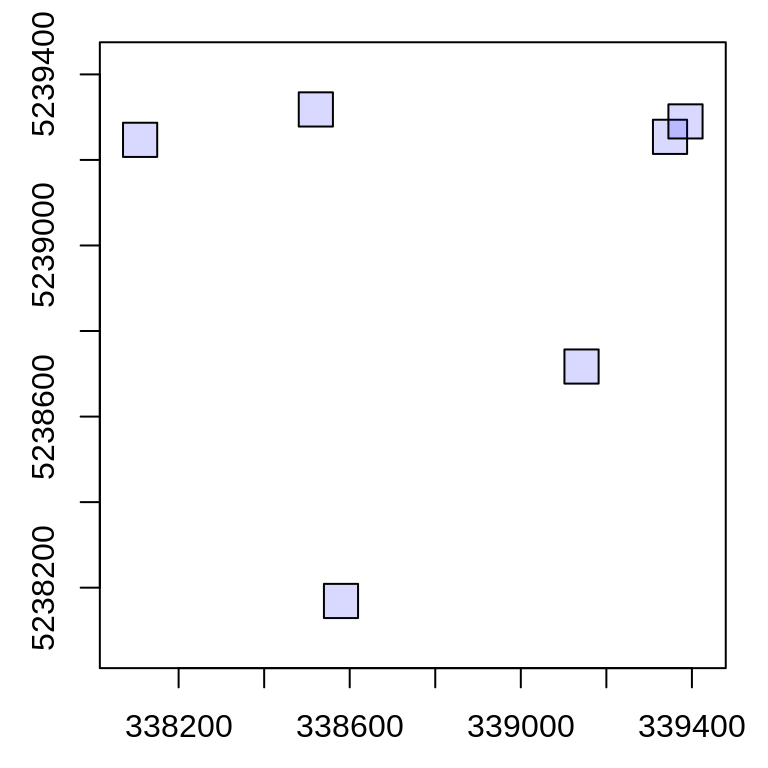
We can check the files that were written on disk and see that the names match the template.
rois$filename
#> [1] "C:\\Users\\tgood\\AppData\\Local\\Temp\\RtmpYnwvYn\\339348.8_5239254_1.las"
#> [2] "C:\\Users\\tgood\\AppData\\Local\\Temp\\RtmpYnwvYn\\339141.9_5238717_2.las"
#> [3] "C:\\Users\\tgood\\AppData\\Local\\Temp\\RtmpYnwvYn\\338579.6_5238169_3.las"
#> [4] "C:\\Users\\tgood\\AppData\\Local\\Temp\\RtmpYnwvYn\\338520.8_5239318_4.las"
#> [5] "C:\\Users\\tgood\\AppData\\Local\\Temp\\RtmpYnwvYn\\338110_5239247_5.las"
#> [6] "C:\\Users\\tgood\\AppData\\Local\\Temp\\RtmpYnwvYn\\339385_5239290_6.las"14.6.2 Multiple extraction with point cloud indexation
Point cloud indexation is a topic covered by this vignette. In short, LAS file indexation allows for faster queries when extracting ROIs in files. Under the hood lidR relies on LASlib to read files and inherits of the capability to leverage the use of LAX files developed by Martin Isenburg. While extracting hundreds of plots from hundreds of files may take many seconds, the use of index files can reduce processing to few seconds.
14.6.3 Summary
We have learned several things about the LAScatalog engine in this section:
- Many functions of the package work the same either with a point cloud (
LAS) or a collection of files (LAScatalog). - The behavior of the engine can be modified to write objects to disk instead of loading everything into memory.
- The engine takes advantage of file indexes.
14.7 Ground classification
14.7.1 Chunk processing
classify_ground() (see section 3) is an important function of lidR, which works seamlessly with the LAScatalog engine. An ALS acquisition is processed in pieces, referred to here as chunks. An acquisition is usually split into chunks where files correspond to a tiling pattern. Using classify_ground() within the LAScatalog engine will process each file sequentially. Given that we emphasize the importance of processing point clouds including a buffer, the engine loads a buffer on-the-fly around each tile before any processing is conducted.
The most basic implementation is very similar to examples in section 3. In this case we first specify where to write the outputs using opt_output_files(). The files written on disk will be LAS files, while the output in R will be a LAScatalog. If we don’t write to disk, the result of each chunk will be stored into memory, potentially leading to memory issues.
opt_output_files(ctg) <- paste0(tempdir(), "{*}_classified")
classified_ctg <- classify_ground(ctg, csf())In reality, R won’t crash because the function won’t allow users to classify a collection of files without providing a path to save outputs. Most functions in lidR check user inputs to mitigate issues.
14.7.2 Modifying buffers
It is possible to modify the behavior of the engine by modifying the size of the buffer with opt_chunk_buffer() <-. The option chunk = TRUE of the function plot() allows visualization of how an option affects the processing pattern. The red boundaries show the chunks that will be sequentially processed and the green dotted lines show the extended regions used for buffering each chunk.
opt_chunk_buffer(ctg) <- 20
plot(ctg, chunk = TRUE)
opt_chunk_buffer(ctg) <- 50
plot(ctg, chunk = TRUE)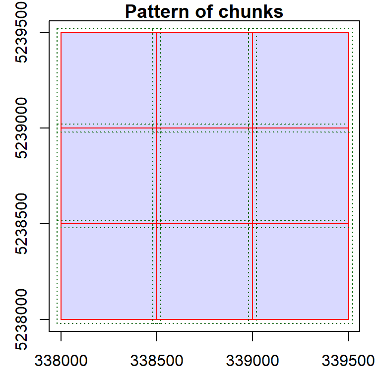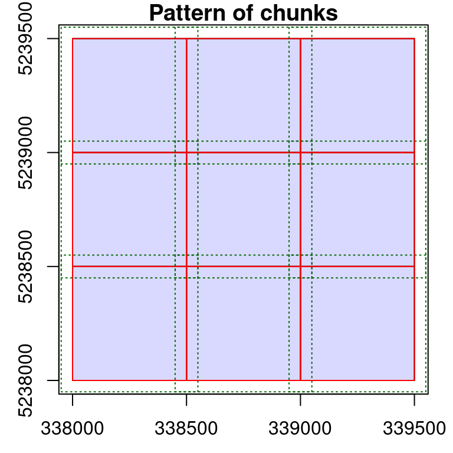
Depending on the point cloud density and the processes applied, it might be necessary to increase the default buffer. Sometimes no buffer is needed at all. No matter the size, the buffered region is only useful to derive a spatial context that extends the actual size of the chunk. After processing, the buffer is removed and never returned in memory or saved in files. It is only loaded temporarily for computation.
14.7.3 Modify the chunk size
In the example above we have seen that each chunk is actually a file. This is the default behavior because it corresponds to the physical splitting pattern. The engine can however sequentially process a LAScatalog in any arbitrarily sized chunk. This may be useful when each file is too big to be loaded in memory, and reducing the size of each processing region may be suitable. Sometimes increasing chunk size to process more than a single file might be useful as well. This is controlled by opt_chunk_size() <-, and again the function plot() enables the preview of the processing pattern.
# Process sequentially tiny 250 x 250 chunks with 10 m buffer
opt_chunk_size(ctg) <- 250
opt_chunk_buffer(ctg) <- 10
plot(ctg, chunk = TRUE)
# Process sequentially bigger 800 x 800 chunks with 40 m buffer
opt_chunk_size(ctg) <- 800
opt_chunk_buffer(ctg) <- 40
plot(ctg, chunk = TRUE)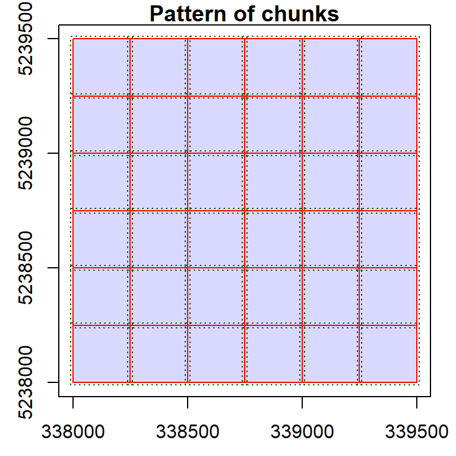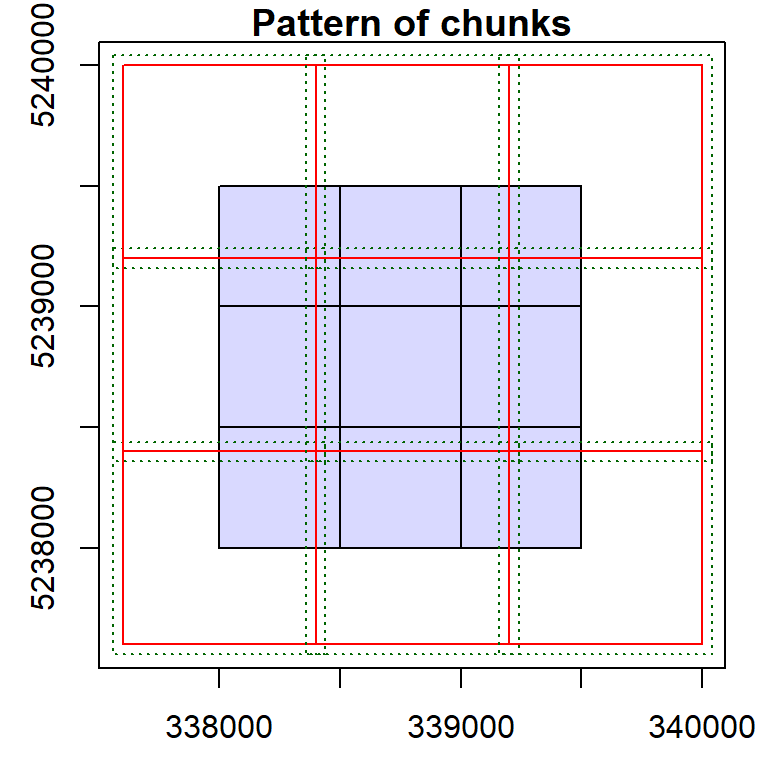
14.7.4 Parallel processing
In lidR every iterative process can be computed in parallel on a single machine or on multiple machines accessible remotely. Remote parallelization is a very advanced case not covered in this book for which a wiki page has been written.
In the following example only local parallelization is covered. Parallelization is driven by the package future. Understanding this package is thus a requirement for being able to parallelize tasks in lidR. In the following example we load future and register a parallelization plan to enable parallelized classification.
library(future)
plan(multisession)
opt_chunk_size(ctg) <- 400
opt_chunk_buffer(ctg) <- 40
opt_output_files(ctg) <- paste0(tempdir(), "/{*}_classified")
classified_ctg <- classify_ground(ctg, csf())Parallelization is a capability of the engine and every function is capable of benefiting from parallel processing. Registering a parallelization plan would have worked with clip_circle() as well. However doing so does no mean that classification is performed in parallel, but that several chunks will be processed simultaneously. This means that its important to pay attention to memory requirements and parallelization is not necessarily relevant in all cases or in all computers.
14.7.5 Summary
We have learned several things about the engine in this section
- The engine iteratively processes regions of interest called chunks.
- Each chunk is loaded with a buffer on-the-fly.
- Users can change chunk sizes to reduce the amount of memory used if files are too big.
- The buffer is used to remove ridge artifacts, which are removed once the computation is done, and is not transferred to processing outputs.
- Iterative processes can be performed in parallel.
- Parallelization is performed by processing several chunks simultaneously. Users need processing memory to load several chunks at a time.
14.8 Digital Terrain Model
So far we have learned enough about the engine to generate a nice and valid DTM using rasterize_terrain() (see section 4).
14.8.1 In memory DTM
Generating a DTM that encompasses an entire ALS acquisition is as easy as generating a DTM that encompasses a single point cloud file. The following generates a DTM with default parameters (i.e. processing by file with a 30 m buffer). In each chunk rasterize_terrain() computes a DTM. The result is a collection of rasters, however one feature of the engine is to merge everything in single, seamless, manipulable object. A raster is usually less memory intensive that a point cloud, so returning everything in memory is feasible if the raster is not too large.
We can render a shaded DTM like that from section 4.6 to better visualize the output:
dtm_prod <- terra::terrain(dtm, v = c("slope", "aspect"), unit = "radians")
dtm_hillshade <- terra::shade(slope = dtm_prod$slope, aspect = dtm_prod$aspect)
plot(dtm_hillshade, col = gray(0:50/50), legend = FALSE)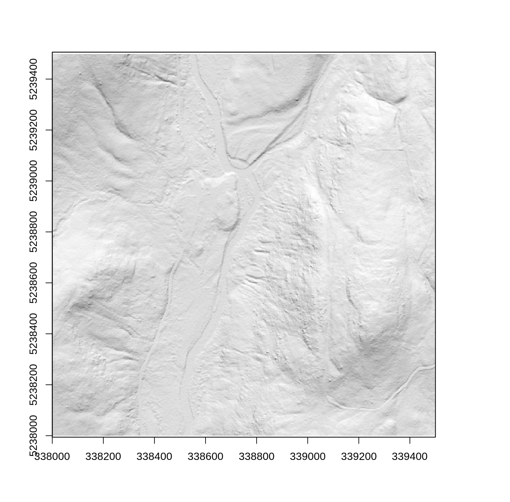
14.8.2 On disk DTM
When the DTM is too big for memory storage it can be written on disk. In this case users will have one raster file per chunk. The buffer is used to perform a valid computation but is removed after the computation, leaving no overlap between files. It is possible to build a virtual raster from multiple files to return a lightweight raster that references on disk files.
opt_output_files(ctg) <- opt_output_files(ctg) <- paste0(tempdir(), "/{*}_dtm")
dtm <- rasterize_terrain(ctg, 1, tin())
dtm
#> class : SpatRaster
#> dimensions : 1500, 1500, 1 (nrow, ncol, nlyr)
#> resolution : 1, 1 (x, y)
#> extent : 338000, 339500, 5238000, 5239500 (xmin, xmax, ymin, ymax)
#> coord. ref. : WGS 84 / UTM zone 19N (EPSG:32619)
#> source : rasterize_terrain.vrt
#> name : Z
#> min value : 534.024
#> max value : 803.364
class(dtm)
#> [1] "SpatRaster"
#> attr(,"package")
#> [1] "terra"Light rasters can be used as if it were an in memory raster or a single file raster and is thus much more convenient than having hundred of files on disk without any structure to hold them all. This feature is called Virtual Dataset and is part of the Geospatial Data Abstraction Library (GDAL) (see also gdalbuildvrt).
14.9 Height normalization
Previous sections detail considerations for using the LAScatalog engine to perform point cloud normalization using normalize_height() (see section 5). We created a DTM in the previous section, so we use it here to normalize.
A point cloud-based normalization without a raster is also possible:
14.10 Area Based Approach
Area based approach (pixel_metrics()) outputs are raster objects like a DTM. Two more options of the engine do exist that are not controllable in every function. When reading a LAS file with readLAS() two options select and filter are offered (see section 2). When processing a collection of files readLAS() is called internally and it is not possible to modify these parameters. Instead we can use the options opt_filter() and opt_select() to propagate these arguments.
Used in conjunction with pixel_metrics(), these enable computation on a selected set of points (first returns for example), loading only user specified attributes. This is useful mainly to save processing memory but may also have a small favorable impact on computation time.
opt_select(ctg_norm) <- "xyz"
hmean <- pixel_metrics(ctg_norm, ~mean(Z), 10)
opt_select(ctg_norm) <- "xyz"
opt_filter(ctg_norm) <- "-keep_first"
hmean <- pixel_metrics(ctg_norm, ~mean(Z), 10)
plot(hmean, col = height.colors(25))
Not all functions respect these two options. For example it does not make sense to load only XYZ when creating a DTM because the classification of points is required to isolate ground points. It is also non-beneficial to load intensity, user data, return number and so on to compute a DTM. The function rasterize_terrain() knows which options to choose and does not respect user inputs. This is the case of several other functions in lidR. But when its suitable, users can tune these options.
14.11 Individual Tree Detection
At this stage with have all the tools required to find each individual tree using locate_trees() in a collection of files. The following example extracts every tree found over the acquisition. The output is returned in memory as a single, continuous object. Each chunk is processed with a buffer ensuring that trees will be properly detected at the edges of the files. A total of 100,000 trees were found in this example.
ttops <- locate_trees(ctg_norm, lmf(4))
ttops
#> Simple feature collection with 102492 features and 2 fields
#> Geometry type: POINT
#> Dimension: XY
#> Bounding box: xmin: 338000 ymin: 5238000 xmax: 339500 ymax: 5239500
#> Projected CRS: WGS 84 / UTM zone 19N
#> First 10 features:
#> treeID Z geometry
#> 1 1 17.441 POINT (338007.6 5238481)
#> 2 2 16.313 POINT (338012.7 5238481)
#> 3 3 16.342 POINT (338007.1 5238488)
#> 4 4 16.199 POINT (338007.4 5238491)
#> 5 5 14.140 POINT (338002.9 5238497)
#> 6 6 18.999 POINT (338019.3 5238496)
#> 7 7 16.330 POINT (338012.1 5238499)
#> 8 8 18.669 POINT (338018 5238492)
#> 9 9 18.508 POINT (338016.3 5238493)
#> 10 10 17.622 POINT (338014.6 5238491)
plot(ttops["Z"], cex = 0.001, pch = 19, pal = height.colors, nbreaks = 30)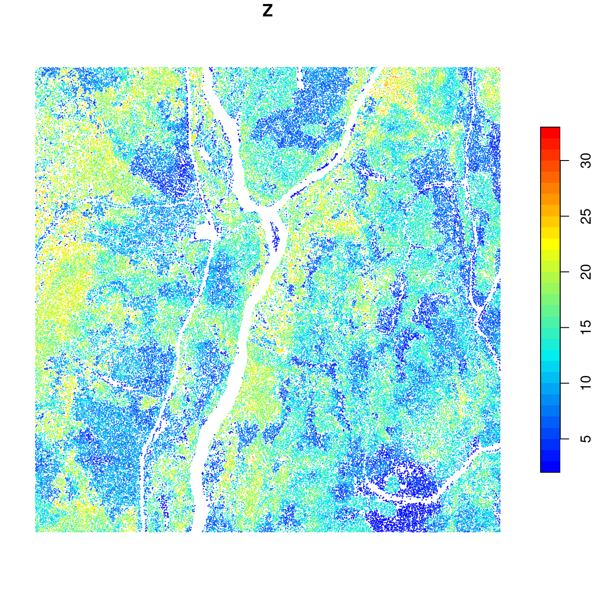
We see some issues with this however. Each tree is expected to be associated to a single ID but if we count the number of trees with the ID = 1 we can see that we have 9 trees fitting that query. Similarly we have 9 trees labelled “2” and so on.
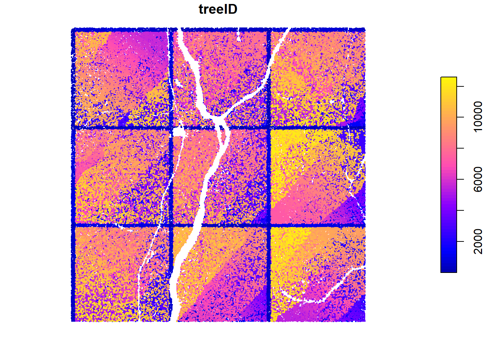
This error has been voluntarily introduced at this stage to illustrate how the LAScatalog engine works. In the engine, each chunk is processed independently of the others. They can even be processed on different machines and in a more or less random order. Thus there is no way to know how many trees were found in the first chunk to restart the numbering in the second chunk. This is mainly because the ‘first and second’ chunk may not have any meaning when processing in parallel. The numbering is thus restarted to 1 in each chunk. This is why there is 9 trees numbered 1. One in each chunk. When the output is returned in memory this can be easily fixed by reassigning new IDs
It is however more difficult to achieve the same task if each chunk is written in a file, and almost impossible to achieve in the case of individual tree segmentation as we will see later. To solve this lidR has two strategies to generate reproducible unique IDs no matter the processing order or the number of trees found. For more details the reader can refer to the documentation for locate_trees(). This option can be selected with the parameter uniqueness.
ttops <- locate_trees(ctg_norm, lmf(4), uniqueness = "bitmerge")
plot(ttops["treeID"], cex = 0.01, pch = 19)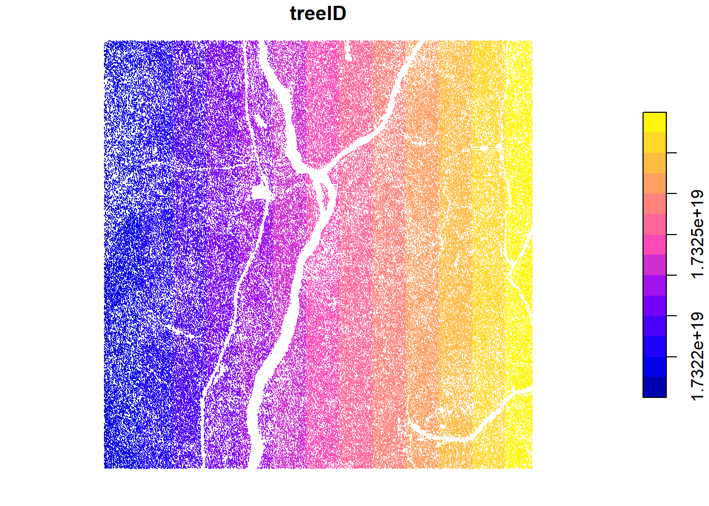
The attribute treeID is now an arbitrary number (here it is negative but not necessarily) computed from the XY coordinates, that is guaranteed to be 1. unique, and 2. reproducible. No matter how the collection of files is processed (by files or by small chunks, in parallel or sequentially, with large or narrow buffer, in memory or on disk) the IDs will always be the same for a given tree.
In all the previous examples we have seen that the engine takes care of merging intermediate results into a single usable object. When intermediate results are stored on disk, the final results in R is a single lightweight object such as a LAScatalog or a Virtual Data set. This is not true for locate_trees() and other functions that return spatial vectors. The default behaviour is to write Geopackage (.gpkg) and there is no way to build a light weight object. What is returned is thus a vector of written files.
opt_output_files(ctg_norm) <- paste0(tempdir(), "/{*}")
locate_trees(ctg_norm, lmf(4), uniqueness = "bitmerge")
#> [1] "C:\\Users\\tgood\\AppData\\Local\\Temp\\RtmpYnwvYn/tiles_338000_5238000_1_norm.shp"
#> [2] "C:\\Users\\tgood\\AppData\\Local\\Temp\\RtmpYnwvYn/tiles_338000_5238500_1_norm.shp"
#> [3] "C:\\Users\\tgood\\AppData\\Local\\Temp\\RtmpYnwvYn/tiles_338000_5239000_1_norm.shp"
#> [4] "C:\\Users\\tgood\\AppData\\Local\\Temp\\RtmpYnwvYn/tiles_338500_5238000_1_norm.shp"
#> [5] "C:\\Users\\tgood\\AppData\\Local\\Temp\\RtmpYnwvYn/tiles_338500_5238500_1_norm.shp"
#> [6] "C:\\Users\\tgood\\AppData\\Local\\Temp\\RtmpYnwvYn/tiles_338500_5239000_1_norm.shp"
#> [7] "C:\\Users\\tgood\\AppData\\Local\\Temp\\RtmpYnwvYn/tiles_339000_5238000_1_norm.shp"
#> [8] "C:\\Users\\tgood\\AppData\\Local\\Temp\\RtmpYnwvYn/tiles_339000_5238500_1_norm.shp"
#> [9] "C:\\Users\\tgood\\AppData\\Local\\Temp\\RtmpYnwvYn/tiles_339000_5239000_1_norm.shp"14.11.1 Summary
We have learned several things about the engine in this section
- Each chunk is processed strictly independently of the others.
- When the intermediate outputs are LAS files, the final output is a lightweight
LASctalog. When the intermediate outputs are raster files, the final output is a lightweight Virtual Data set. However for spatial vectors and some other data types it is not always possible to aggregate files into a single lightweight object. Thus the names of the files are returned. - Strict continuity of the output is not always trivial because each chunk is processed independently of the others but
lidRalways guarantee the validity and the continuity of the outputs.
14.12 Individual Tree Segmentation
Individual tree segmentation with segment_trees() is the most complicated function to use with a LAScatalog because there are many different algorithms. Some imply the use of an in memory raster and an in memory vector, some require only an in memory raster and some require only a point cloud (see section 7). Moreover it is complex to manage edge artifacts. Imagine there is a tree that is situated exactly on the edge between two files. The first half on one file, the second half on another. The two files will be processed independently - maybe on different remote computers. Both sides of the tree must be attributed the same ID independently to get something that is strictly continuous. The function segment_trees() manages all these points. The example below uses the dalponte2016() algorithm.
First we create a 1 m resolution CHM stored on disk and returned as a light virtual raster.
opt_output_files(ctg_norm) <- paste0(tempdir(), "/chm_{*}")
chm <- rasterize_canopy(ctg_norm, 1, p2r(0.15))
plot(chm, col = height.colors(50))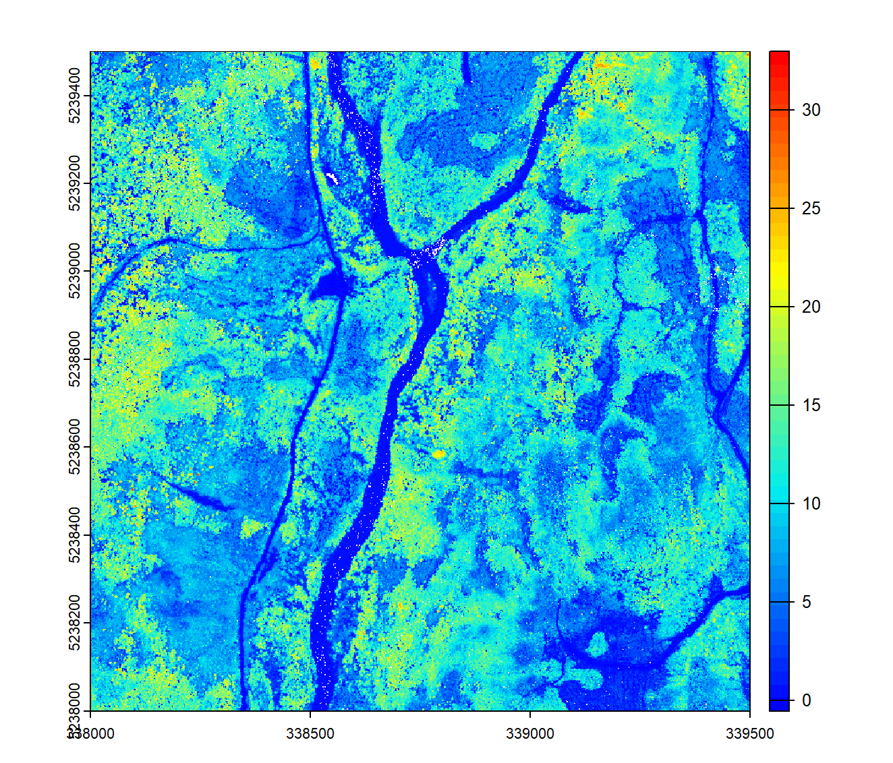
Second we compute the seeds by finding the trees as seen above. The result must be loaded in memory because there is no way to combine many vectors stored on disk like rasters. In this example it is possible because there are 100,000 trees. But for bigger collections it may not be possible to apply this algorithm in a simple way.
To finish, we apply segment_trees(). Here we don’t need to specify any strategy to get unique IDs because the seeds are already uniquely labelled. These IDs will be preserved. But for an algorithm without any seed such as watershed() it is important to have a strategy.
opt_output_files(ctg_norm) <- paste0(tempdir(), "/{*}_segmented")
algo <- dalponte2016(chm, ttops)
ctg_segmented <- segment_trees(ctg_norm, algo)The new LAScatalog that is returned is made up of files that have an extra attribute named treeID where each point is labelled with an ID thats unique for each tree, even those that belong between two or more files that were processed independently. We can load a plot between two files to check:
opt_output_files(ctg_segmented) <- ""
lasplot <- clip_circle(ctg_segmented, 338500, 5238600, 40)
pol = crown_metrics(lasplot, NULL, geom = "convex")
plot(sf::st_geometry(pol), col = pastel.colors(250), axes = T)
plot(ctg, add = T)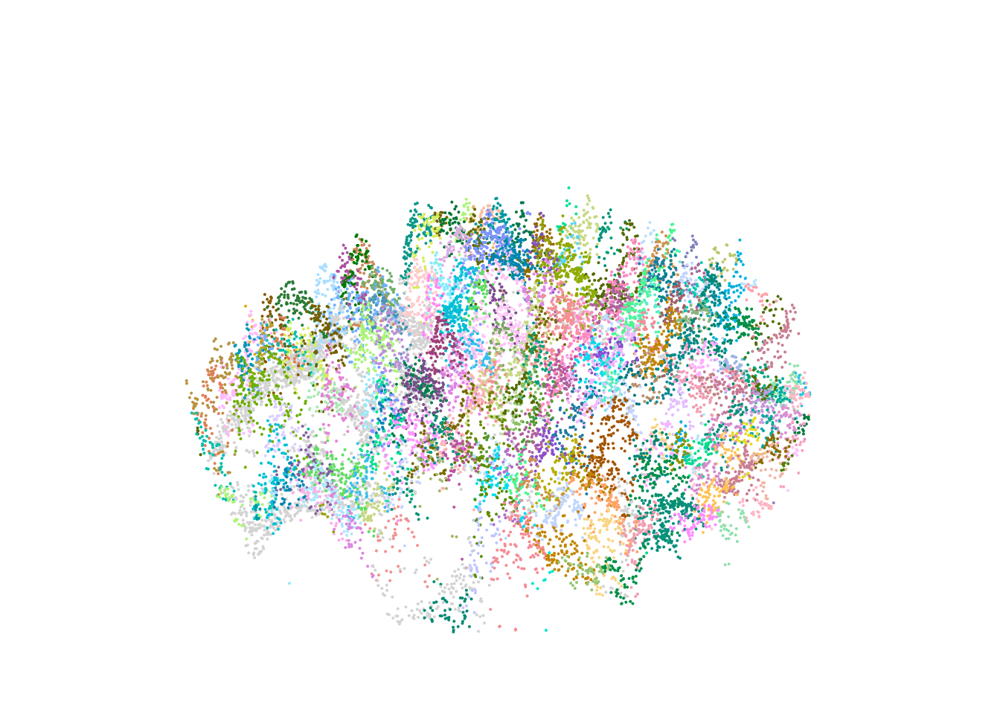
We can observe that the segmentation is perfect with respect to the labelling problem. Trees that were segmented twice independently on each edge were attributed the same IDs on both sides and that the final output is wall-to-wall.
14.13 Retile a catalog
The function catalog_retile() allows for retiling an ALS acquisition of files. This is the best example to combine everything we have seen in this section.
14.13.1 Retile a catalog into smaller files
catalog_retile() allows for retiling the acquisition of files in tiles of any size.
opt_output_files(ctg) <- paste0(tempdir(), "/{XLEFT}_{YBOTTOM}") # label outputs based on coordinates
opt_chunk_buffer(ctg) <- 0
opt_chunk_size(ctg) <- 250 # retile to 250 m
small <- catalog_retile(ctg) # apply retile
plot(small) # some plotting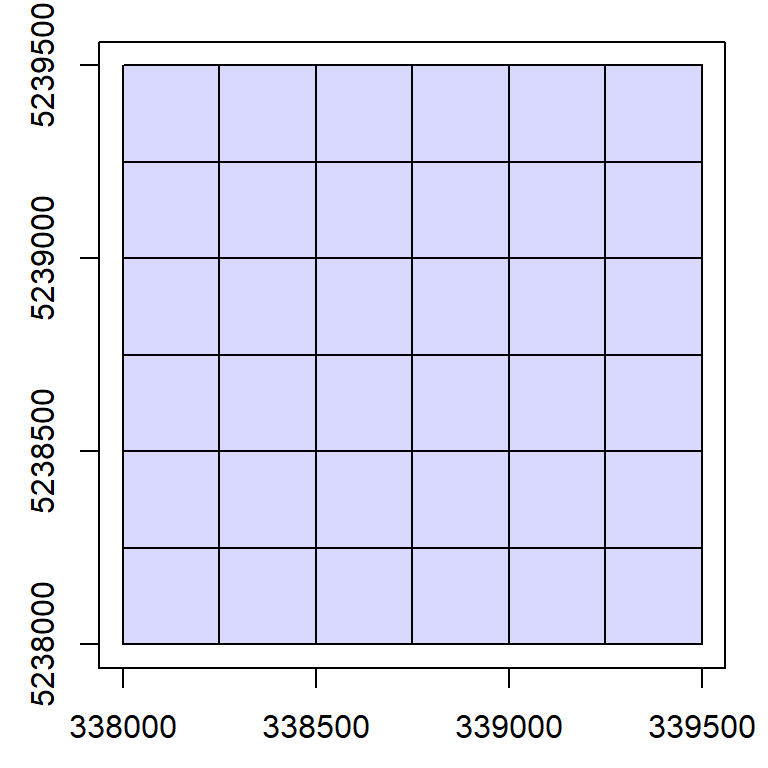
14.13.2 Add a buffer around each file
catalog_retile() is a special case where the buffer is not removed after computation. The function does not compute anything, but only streams point from inputs files to output files. It can be used to add a buffer around each file.
opt_chunk_buffer(ctg) <- 20 # set buffer to 20
opt_chunk_size(ctg) <- 0 # no change to chunk size
opt_output_files(ctg) <- paste0(tempdir(), "/{ORIGINALFILENAME}_buffered") # name outputs with original name and "_buffered"
buffered <- catalog_retile(ctg) # apply buffer
plot(buffered) # some plotting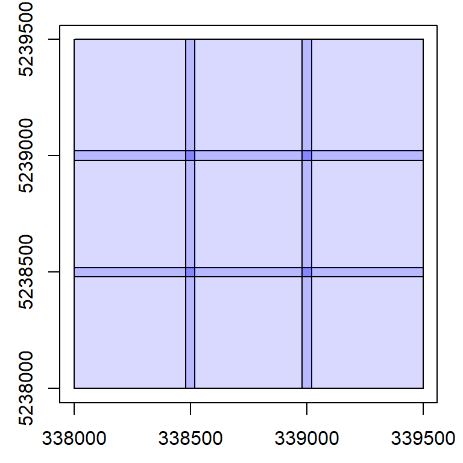
Be careful. This may be useful for processing in other softwares, but lidR loads a buffers on-the-fly and does not support already buffered files. When processing a buffered collection in lidR the output is likely to be incorrect with the default parameters.
14.13.3 Create a new collection with only first returns
In combination with opt_filter(), catalog_retile() can be used to generate a new collection of files that contains only first returns. This is not very useful in lidR because this can be achieved on-the-fly when reading the files using filter() (see section 2.1.2), though could be useful to process point clouds in other software.
14.13.4 Create a new collection of small and buffered ground returns in parallel
We can combine all the options seen in this section to generate a buffered set of tiny files containing only ground returns. We present that here in parallel.
library(future)
plan(multisession)
opt_output_files(ctg) <- paste0(tempdir(), "/{XLEFT}_{YBOTTOM}_first_buffered")
opt_chunk_buffer(ctg) <- 10
opt_chunk_size(ctg) <- 250
opt_filter(ctg) <- "-keep_class 2"
newctg <- catalog_retile(ctg)
plot(newctg)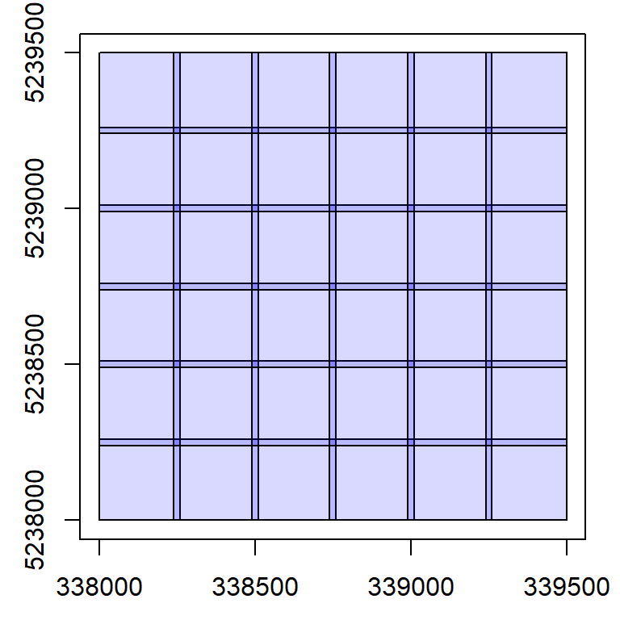
14.14 The case of ground inventories
The case of ground inventories or more generally independent files is particular. We generated such collections in the first example of this section.
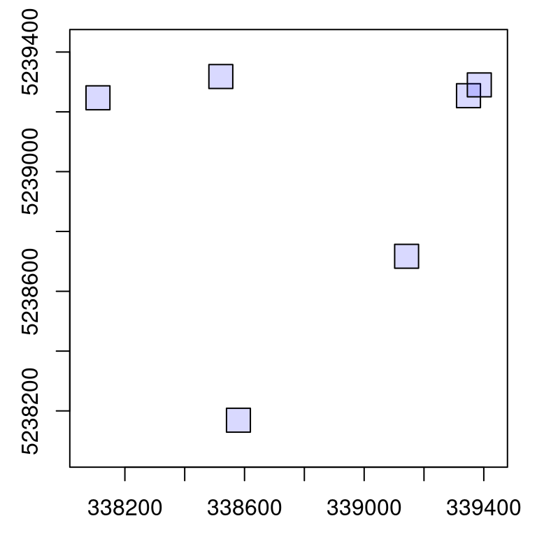
rois is made of unrelated circular files. Loading a buffer is meaningless because there is no neighbouring files. Creating chunks is meaningless as well because we usually want one output per file without generating a wall-to-wall object. Worse even, with the wrong options the output might be incorrect.
For example on the top right of the previous collection we can see two overlapping files. If processed by chunk and with a buffer this will load the same points twice in the overlapping area, plus some extra points from the other plot that are not related at all to the first plot. In short, in the case of ground plot inventories 99% of the cases consist in processing iteratively by file, without a buffer and without returning a single aggregated object. This case actually corresponds to a regular for loop, as shown in the introduction of this section. Thus there is no need for all the features provided by the LAScatalog engine and anyone with any background in programming can write a small script that does this job.
The engine can however do it with appropriate options. In this case the LAScatalog processing engine becomes more or less a parallelizable for loop with a real time monitoring.
opt_chunk_size(rois) <- 0 # processing by files
opt_chunk_buffer(rois) <- 0 # no buffer
opt_wall_to_wall(rois) <- FALSE # disable internal checks to ensure a valid output. Free wheel mode
opt_merge(rois) <- FALSE
opt_output_files(rois) <- ""
dtm <- rasterize_terrain(rois, 1, tin())
plot(dtm[[1]], col = gray(1:50/50))This can be set in one command:
Everything seen so far remains true. But with these options we are sure to not make mistakes when processing independent files.
14.15 Summary of available options
The engine processes the covered area by chunk. A chunk is an arbitrary square region queried from the collection of files. Each chunk is loaded with a buffer, and each chunk correspond to an independent results. All together the chunks tessellate the coverage unless files are not overlapping. Results are merged into a single object at the end of the processing when possible.
opt_chunk_size(ctg) <- 800controls the size of the chunks. Set 0 use the tiling pattern (processing by file)opt_chunk_buffer(ctg) <- 40controls the size of the buffer around each chunks.opt_chunk_alignment(ctg) <- c(100, 200)controls the alignment of the chunksopt_output_file(ctg) <- "{TEMPLATE}redirects the results in files named after the templated name.opt_select(ctg) <- "xyzi"loads only the attributes of interest when querying a chunk, in this case the xyz and intensity values (seereadLAS()- section 2.1)opt_filter(ctg) <- "-keep_first"loads only the points of interest when querying a chunk (seereadLAS()- section 2.1)opt_wall_to_wall(ctg) <- FALSEdisables some internal control that guarantee that output will be strictly wall-to-wall. It should not be used actually becauseopt_independent_files()should cover the vast majority of casesopt_independent_files() <- TRUEto configure the processing for the special case of independent files (typically plot inventories). It turns the engine into a simple loop and the notion of chunks covering the area is lost.opt_merge(ctg) <- FALSEdisables the final merging. In this case alistis returned in all cases.opt_progress(ctg) <- FALSEdisables progress estimation ticker.opt_stop_early(ctg) <- FALSEdisable early exit. If a chunk throws an error the processing keeps going and this chunk will be missing in the output.- Use
futureand register a parallelization plan to process several chunks at a time taking advantage of multiple cores or multiple machines architectures.
One can use the function summary() to display the main current processing options of the catalog:
summary(ctg)
#> class : LAScatalog (v1.0 format 1)
#> extent : 338000, 339500, 5238000, 5239500 (xmin, xmax, ymin, ymax)
#> coord. ref. : WGS 84 / UTM zone 19N
#> area : 2.25 km²
#> points : 9.45 million points
#> density : 4.2 points/m²
#> density : 3.4 pulses/m²
#> num. files : 9
#> proc. opt. : buffer: 10 | chunk: 250
#> input opt. : select: * | filter: -keep_class 2
#> output opt. : on disk | w2w guaranteed | merging enabled
#> drivers :
#> - Raster : format = GTiff NAflag = -999999
#> - stars : NA_value = -999999
#> - SpatRaster : overwrite = FALSE NAflag = -999999
#> - SpatVector : overwrite = FALSE
#> - LAS : no parameter
#> - Spatial : overwrite = FALSE
#> - sf : quiet = TRUE
#> - data.frame : no parameter#> NULL